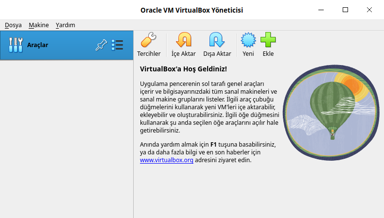
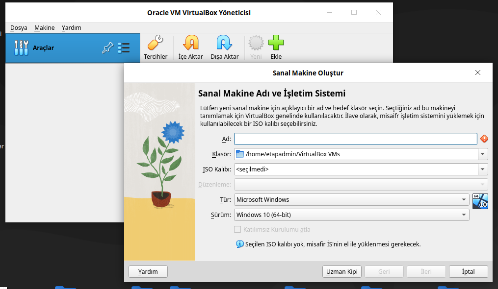
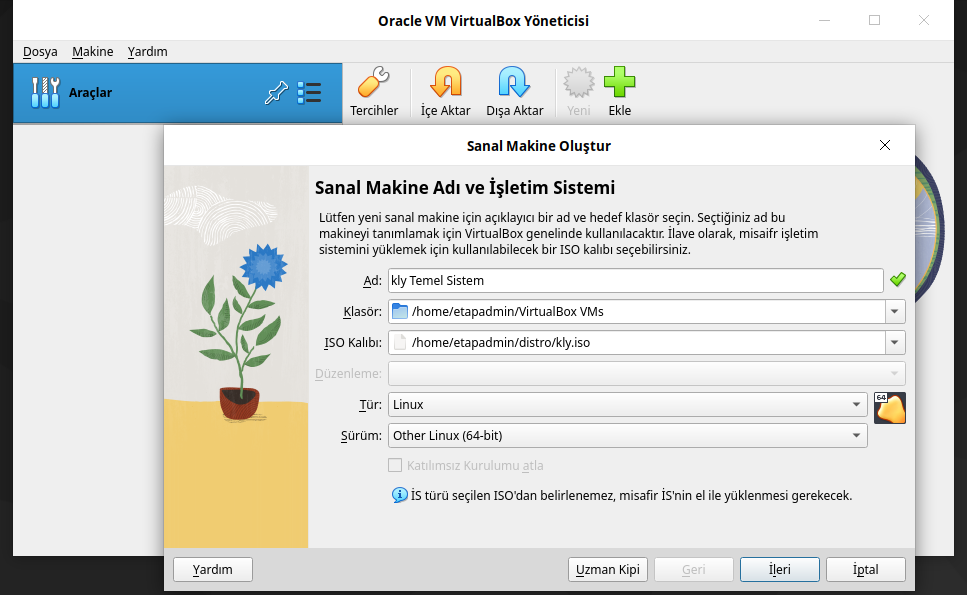
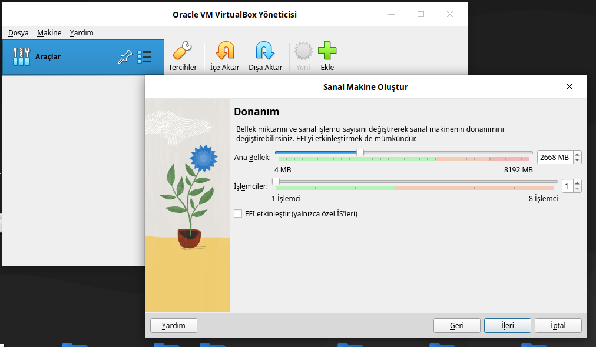
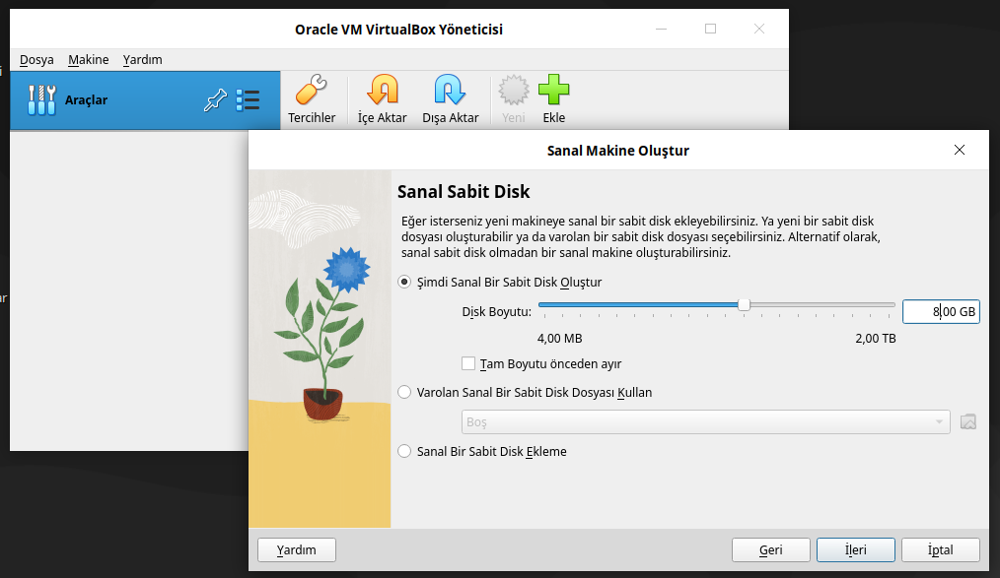
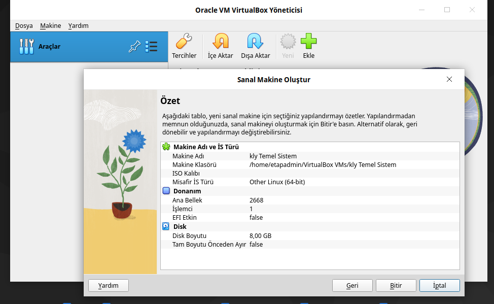
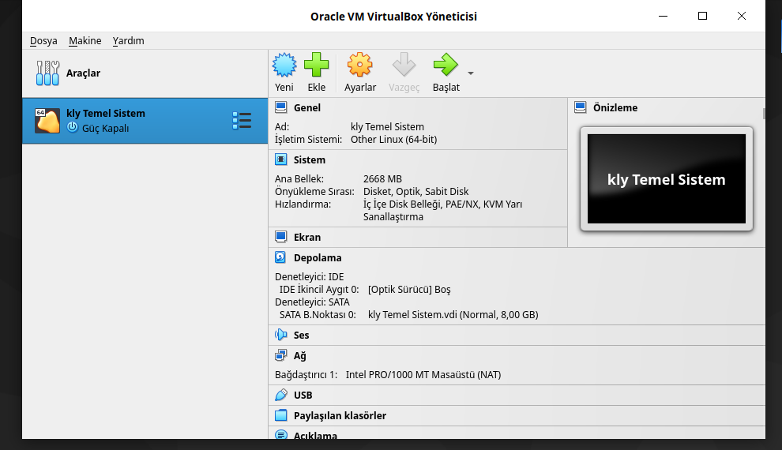
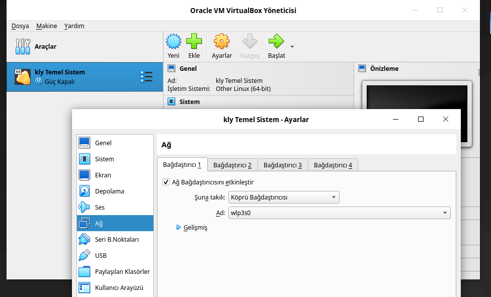
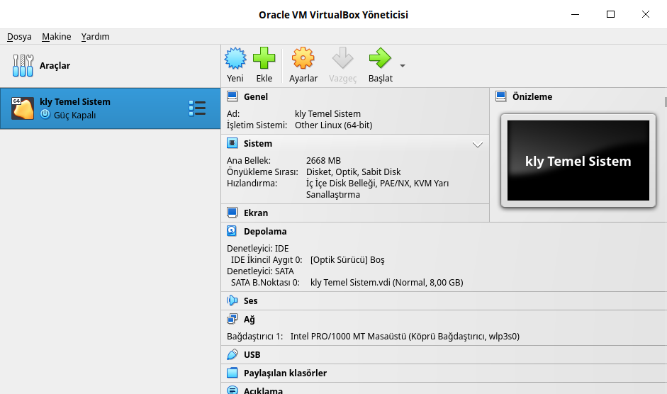
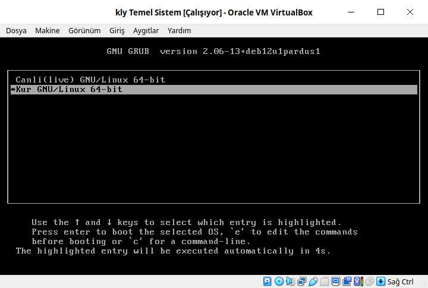

VirtualBox¶
VirtualBox, Oracle tarafından geliştirilen bir açık kaynaklı sanallaştırma yazılımıdır. Bilgisayarınızda çalışan bir işletim sisteminin (örneğin Windows, Linux, macOS) içinde başka bir işletim sistemi çalıştırmanıza izin verir. Bu çalıştırdığınız ikinci işletim sistemi (konuk/guest) kendi sanal donanımına sahipmiş gibi davranır.
sudo apt update # index güncellenir
sudo apt install virtualbox-7.0 # Sisteme virtualbox kurulur
{kind=link}

Ekle seçeneğini seçin. Aşağıdaki gibi bir ekran gelecektir.
{kind=link}

Aşağıdaki gibi seçenekleri doldurunuz.
{kind=link}

İleri seçeneği seçilir ve aşağıdaki gibi ekrana gelirsiniz. Bellek miktarını aşağıdaki gibi belirleyiniz. İleri seçeneği seçilir.
{kind=link}

Disk boyutu belirlenir. 8GB bu sistem için yeterli. İleri seçeneği seçilir.
{kind=link}

Tüm işlemler bitince aşağıdaki gibi pencere gelir. Bitir'i seçerek işlem tamamlanır.
{kind=link}

Bitir işlemi seçildikten sonra aşağıdaki gibi görünecektir.
{kind=link}

Ayarlar bölümünde aşağıdaki gibi Ağ ayarında değişiklik yapılır.
{kind=link}

Başlat seçilerek sistem çalıştırılır.
{kind=link}

İso açıldığıda aşağıdaki gibi ekran gelecektir. Burada seçili olan iso Temel Sistem isosudur.
{kind=link}
